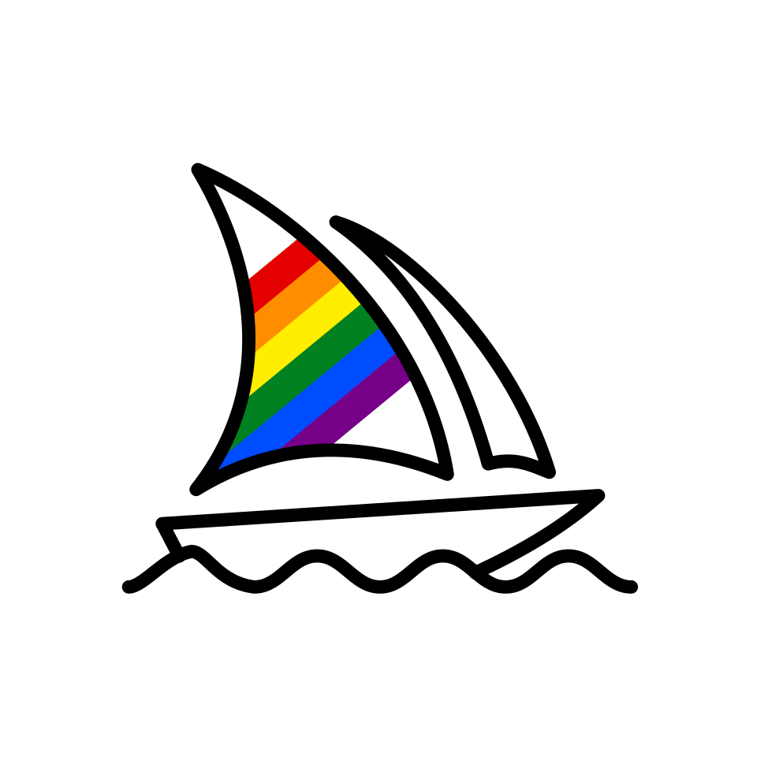

Midjourney
Midjourney는 텍스트로 된 설명문이나 설명구로부터 이미지를 생성하는 인공지능 프로그램으로, DALL-E와 비슷하다. 현재 오픈 베타 버전으로 운영되고 있다.
최종 업데이트

Midjourney는 어떤 브랜드인가
Midjourney는 텍스트 프롬프트로부터 이미지를 만들어내는 인공지능 프로그램이며, 공식 디스코드 서버의 봇을 통해서만 접근할 수 있다. 사용자는 /imagine 명령으로 프롬프트를 입력하면 봇이 4개의 이미지 세트를 반환하며, 그중 하나를 선택해 확대할 수 있다.
이 프로그램은 영국 잡지 이코노미스트의 2022년 6월호 표지를 만드는 데 사용되기도 했다. 광고 업계는 독창적인 콘텐츠 제작과 아이디어 브레인스토밍을 위해 이 도구를 빠르게 수용해 왔고, 건축가들은 프로젝트 초기 단계의 무드 보드를 만드는 데 활용하고 있다.
한편 일부 예술가는 자신의 창작물이 학습 데이터로 쓰였다며 비판했고, 이에 따라 서비스 약관에는 DMCA 게시 중단 정책이 포함되어 있다.
Midjourney는 어떻게 시작되고 성장했나
Midjourney는 미국에서 2022년에 설립되었다. 팀은 리프 모션(Leap Motion)을 공동 설립한 데이비드 홀츠(David Holz)가 이끌고 있다.
홀츠는 예술가를 Midjourney의 경쟁자가 아닌 고객으로 본다고 말했으며, 예술가들이 작업을 시작하기 전에 고객에게 보여줄 예술적 개념을 신속하게 프로토타입화하는 용도로 Midjourney를 사용한다고 설명했다.
Midjourney의 브랜드 아이덴티티는 무엇인가
Midjourney는 별도의 웹사이트가 아닌 디스코드 봇의 명령어를 통해 이미지를 생성한다는 점에서 다른 이미지 생성 AI와 구분된다.
Midjourney의 대표 제품과 서비스는 무엇인가
Midjourney는 공식 디스코드 서버의 봇을 통해 제공되며, 사용자는 봇에 직접 메시지를 보내거나 봇을 제3자 서버에 초대하는 방식으로 이용할 수 있다. 이미지를 생성하려면 /imagine 명령을 사용해 프롬프트를 입력하며, 봇은 4개의 이미지 세트를 돌려주고 사용자는 확대할 이미지를 선택할 수 있다.
이 밖에도 두 이미지를 혼합하는 /blend 명령, 긴 프롬프트를 짧게 만드는 방법을 제안하는 /shorten 명령 등 다양한 명령을 제공한다. Midjourney는 웹 인터페이스도 개발 중이다.
Midjourney는 지금 어떤 상태인가
Midjourney는 현재 오픈 베타 버전이며, 공식 디스코드 서버의 봇을 통해서만 접근할 수 있다. 광고 업계와 건축 분야 등에서 활용이 확산되고 있는 한편, 예술가들의 저작권 관련 비판 속에서 서비스 약관에 DMCA 게시 중단 정책을 포함시켜 두고 있다.
Midjourney 로고는 어떻게 변해왔나
자주 묻는 질문
Midjourney는 어느 나라 브랜드인가요?
Midjourney는 미국의 AI·인공지능 브랜드입니다.
Midjourney는 언제 설립되었나요?
Midjourney는 2022년 설립되었습니다.
Midjourney의 브랜드 아이덴티티는 무엇인가요?
Midjourney는 별도의 웹사이트가 아닌 디스코드 봇의 명령어를 통해 이미지를 생성한다는 점에서 다른 이미지 생성 AI와 구분된다.
Midjourney의 대표 제품은 무엇인가요?
Midjourney는 공식 디스코드 서버의 봇을 통해 제공되며, 사용자는 봇에 직접 메시지를 보내거나 봇을 제3자 서버에 초대하는 방식으로 이용할 수 있다.
Midjourney는 현재 어떤 상태인가요?
Midjourney는 현재 오픈 베타 버전이며, 공식 디스코드 서버의 봇을 통해서만 접근할 수 있다.
Midjourney의 공식 웹사이트는 어디인가요?
Midjourney의 공식 웹사이트는 https://www.midjourney.com/ 입니다.
출처와 검증
Midjourney 관련 참고: 공식 웹사이트 · 위키데이터 Q113070628 · 한국어 위키백과 · 영어 위키백과. 브랜드명은 한글과 원어를 함께 표기하되 데이터에 없는 표기는 만들지 않습니다. 기원 국가·설립연도는 검수된 정의문에서 확인된 값을 우선하고, 없을 때만 공식 웹사이트 URL이 일치하는 위키데이터 개체의 값을 씁니다. 위키데이터 값은 2026-09-26 기준입니다.